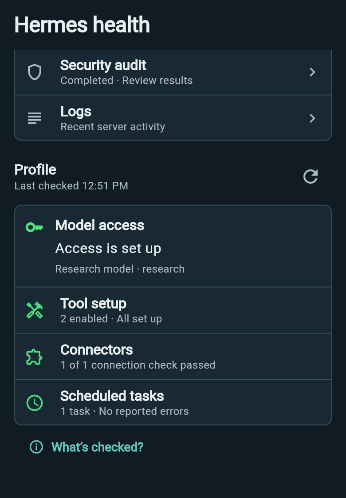

Know what
needs attention.
Check the machine, the server and the selected profile in one place. Wing keeps their observations distinct, with check times and a path to the settings that need attention.
Real Wing interfaces · Demo content
Take a closer look
See the machine behind your agent.
Host shows the connected machine and available CPU, memory, disk, uptime and load observations. Open its details when you need a closer look, or refresh the resource readings.
If the server does not supply a measurement, Wing keeps it unavailable. When a refresh fails, the last observation keeps its read time.
Look into a server problem.
Server brings Doctor, the security audit and logs together. Diagnostics retain their own progress and results; open a result to read the findings. Logs can be narrowed by category, severity and search.
A completed diagnostic is an invitation to review what it reported. Wing does not turn separate checks into an overall “everything is healthy” promise.
Check the agent you are using.
Profile checks cover model access, tool setup, connectors and scheduled tasks. Choose a profile in the header to check that agent’s setup; observations stay with the profile they belong to.

When access needs fixing, Wing opens the owning account editor. Incomplete checks offer a retry. The What’s checked? explanation tells you what the checks establish.
Clear results have clear limits.
Model access checks credential resolution, not successful replies or remaining quota. Tool setup checks configuration, connector checks do not exercise every action, and schedule checks do not run jobs.
Use Health to understand the setup, then use Administration to change its supported settings.
Explore Administration